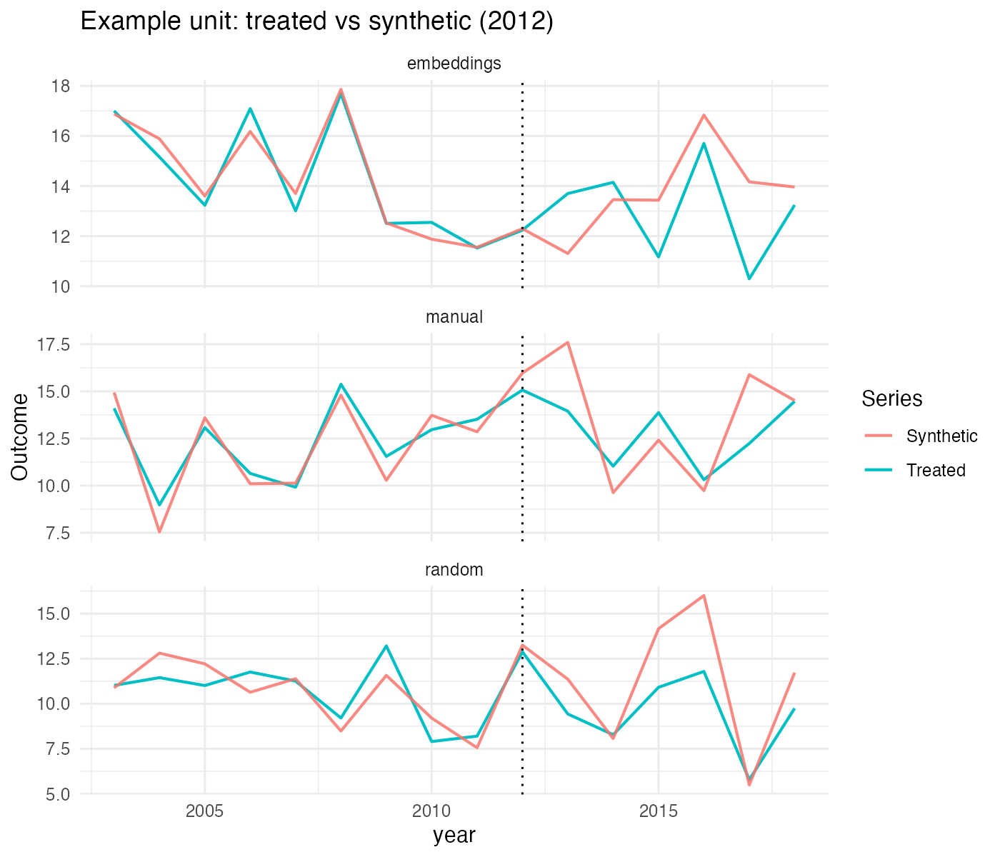
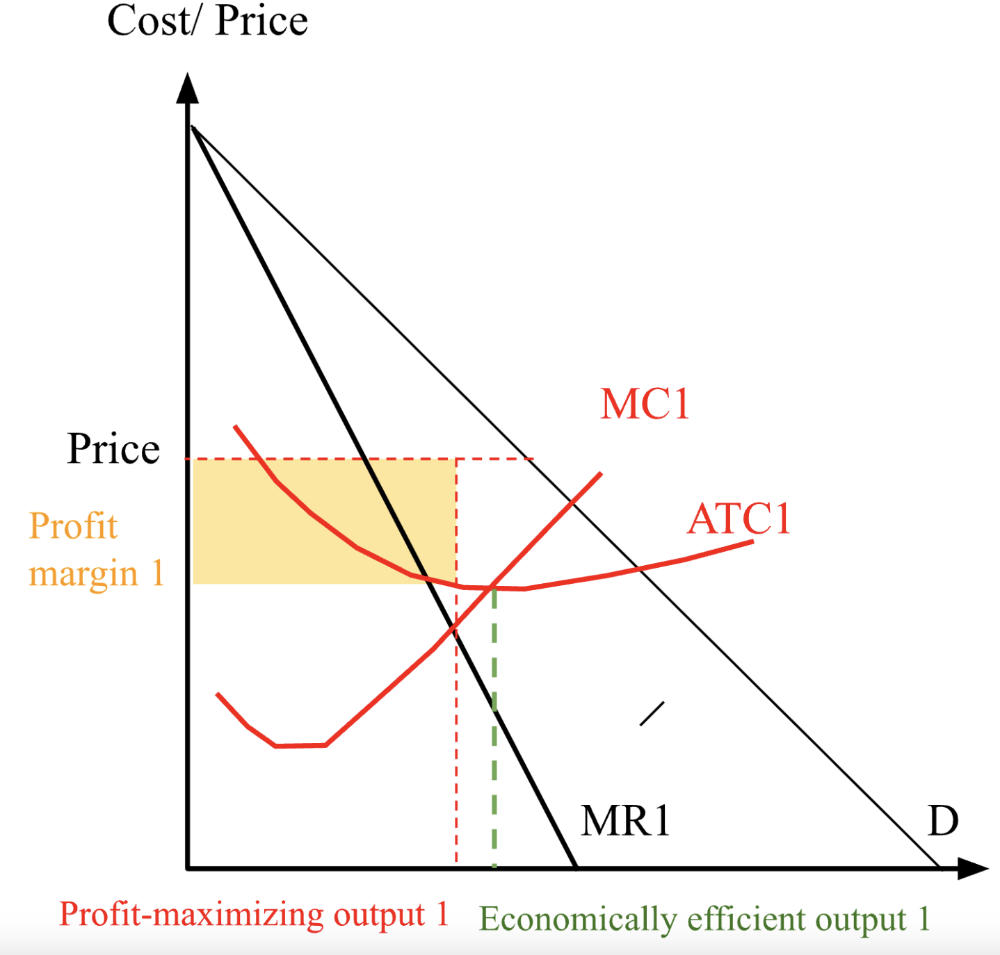
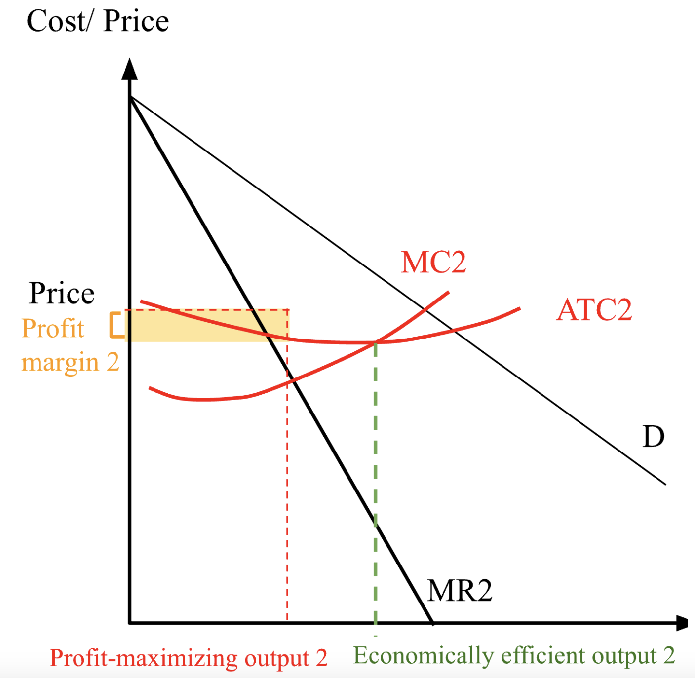
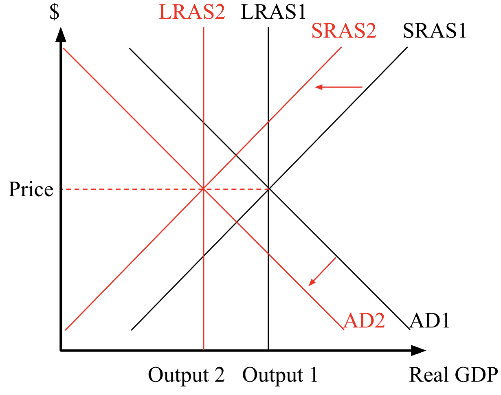
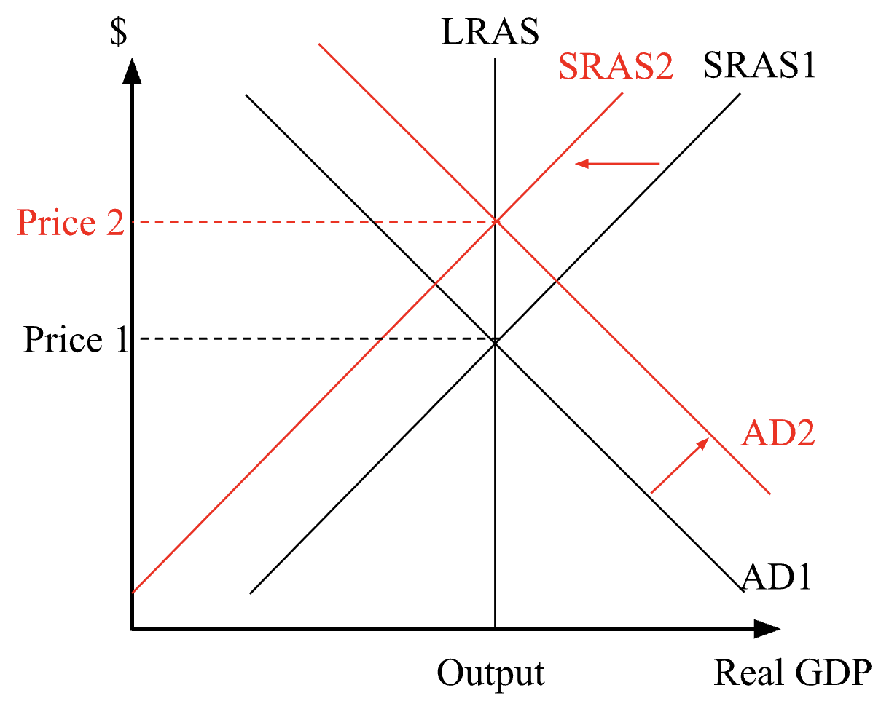

A Satellite-based Synthetic Control Evaluation of Prescribed Burn Intervention
Embedding-informed donor selection improves causal inference in high-dimensional environmental policy evaluation
Random Statewide Donors (500 untreated pixels)
Donor Selection Rule
Randomly sample 500 untreated conifer pixels statewide. No explicit constraint on ecological similarity; relies on large sample to approximate covariate distributions.
Pre-Treatment Fit (2003–2011)
RMSPE: Root Mean Squared Prediction Error Measures how well synthetic control tracks treated pixels pre-treatment. Lower = better pre-fit.
Control Pool Similarity (Embedding Space)
Red: treated pixel. Gray/Orange/Green: donors from Random/Manual/Embedding strategies. Embedding-based selection yields tighter clusters in latent similarity space, improving comparability.
Estimated Treatment Effects (Post-Treatment 2012–2018)
Treated pixels (n=3,966) vs. Synthetic Controls: Pre-treatment alignment (2003–2011) and post-treatment divergence (2012–2018) by donor strategy. All strategies share identical pre-window and post-window definitions.

Interpretation: All three strategies track pre-treatment trajectories closely, supporting parallel-trends assumption. Post-2012, Embedding-based (green) exhibits the largest and most sustained divergence from synthetic control, followed by Manual (orange), then Random (gray). This ordering aligns with pre-treatment balance quality.
Average Treatment Effect on the Treated (ATT): Post-treatment reduction in FRP (MW) aggregated over 2012–2018. Negative values indicate wildfire mitigation.
| Strategy | Pre-RMSPE | ATT (MW) | 95% CI | % ATT | 95% CI % |
|---|---|---|---|---|---|
| Random (500) | 0.45 | −0.53 | [−0.88, −0.18] | −3.2% | [−3.9%, −2.5%] |
| Manual (284) | 0.36 | −0.67 | [−0.98, −0.36] | −3.8% | [−4.6%, −3.0%] |
| Embeddings (K=50) | 0.23 | −0.81 | [−1.08, −0.54] | −4.4% | [−5.1%, −3.7%] |
Key Finding: Embedding-based donors deliver the largest negative ATT (−0.81 MW) with the smallest uncertainty (SE=0.14). This translates to a −4.4% reduction in post-treatment FRP relative to baseline. The ordering is consistent: Embeddings > Manual > Random, mirroring pre-treatment balance quality.
Gap Plot: Median treated − synthetic FRP over time. Zero or near-zero pre-gaps indicate good parallel-trends validity. Sustained negative post-gaps indicate treatment effect credibility.

Interpretation: All strategies show near-flat pre-trends (flat gray band 2003–2011), supporting the assumption that treated and control outcomes would have followed parallel paths absent treatment. Post-2012, Embeddings (green) exhibits the largest and most stable negative gap, approximately twice the magnitude of Manual and Random strategies. The absence of systematic pre-existing divergence strengthens causal attribution.
Sensitivity Analysis: ATT estimates under alternative specifications (pre-period length, donor count K, outlier exclusion, spatial buffers). Robustness to design choices supports credibility of main results.
| Specification | Pre-RMSPE | ATT (MW) | 95% CI | % ATT |
|---|---|---|---|---|
| Embeddings: Baseline (K=50) | 0.23 | −0.81 | [−1.08, −0.54] | −4.4% |
| Embeddings: Shorter pre (5y) | 0.29 | −0.68 | [−1.03, −0.33] | −3.7% |
| Embeddings: K=25 | 0.26 | −0.65 | [−1.05, −0.25] | −3.5% |
| Embeddings: K=100 | 0.22 | −0.85 | [−1.11, −0.59] | −4.6% |
| Embeddings: Exclude FRP > 500 MW | 0.24 | −0.54 | [−0.97, −0.11] | −2.9% |
| Embeddings: Buffer 5 km | 0.23 | −0.87 | [−1.16, −0.58] | −4.7% |
Robustness Finding: ATT estimates remain stable across design variations. Embedding-based ATT ranges from −0.54 to −0.87 MW across all specifications, with tight confidence intervals. Even when relaxing donor constraints (K=100) or using only 5-year pre-periods, estimates remain consistent. This demonstrates the method's reliability and reduces concerns about design-specific artifacts.
Research Contribution & Methodology
📊 Core Finding
Low-intensity prescribed fire reduces subsequent high-intensity wildfire risk by 4.4% (95% CI: [−5.1%, −3.7%]) over a six-year horizon, with effects concentrated in embedding-matched control pixels that exhibit superior pre-treatment balance.
🔬 Methodological Innovation
Satellite-derived embeddings from PrithVi V2 foundation model constrain donor pools to latent ecological peers, improving pre-treatment RMSPE from 0.45 (Random) to 0.23 (Embeddings)—a 49% reduction—while preserving synthetic control interpretability.
✓ Identification Strength
Embedding-based donors achieve standardized pre-treatment covariate balance near zero across all six key variables (FRP, Elevation, Canopy Cover, Prior Fires, Precipitation, Temperature), compared to larger imbalances in Random and Manual strategies.
🛡️ Robustness
ATT estimates stable across pre-period lengths, donor counts (K=25–100), outlier exclusion, and spatial buffers. Worst-case specification (FRP > 500 MW excluded) still yields −2.9% ATT, indicating core inference is not driven by extreme outcomes.
Research Design
- Estimand: Average treatment effect on the treated (ATT) for VMP-treated pixels (n=3,966) relative to synthetic controls constructed from untreated conifer pixels.
- Pre-period: 2003–2011 (9 years); Post-period: 2012–2018 (6 years)
- Outcome: Maximum Fire Radiative Power (FRP) in MW from MODIS FIRMS, capturing fire intensity at 1 km² resolution.
- Donor Strategies Compared: Random statewide (500 pixels), Manual covariate screens (284 pixels), Embedding-based K-nearest neighbors (50 pixels)
- Inference: Block bootstrap over treated units (500 resamples) for SEs and 95% CIs; placebo-based p-values pending additional computation.
Causal Inference & Geospatial Methods
Each method addresses a specific identification problem in observational policy evaluation
Synthetic Control Methods
Constructs counterfactual outcomes by weighting combinations of untreated units to match pre-treatment characteristics of treated units.
Solves: Missing counterfactual when only one or few units are treated and randomization is impossible.
Causal Forests
Machine learning approach to estimate heterogeneous treatment effects without parametric assumptions, using recursive partitioning.
Solves: Treatment effect heterogeneity when functional form is unknown and effects vary across subpopulations.
Difference-in-Differences
Compares changes in outcomes over time between treated and control groups, leveraging panel structure to control for time-invariant confounders.
Solves: Selection on unobservables that are time-invariant, using parallel trends assumption.
Bayesian Hierarchical Models
Multilevel regression with partial pooling, allowing effects to vary across groups while borrowing strength across units.
Solves: Small sample sizes within subgroups and uncertainty quantification in policy evaluation.
Representation Learning for Matching
Uses deep learning embeddings from satellite imagery to construct similarity metrics for donor selection in causal inference.
Solves: Latent confounding and high-dimensional covariate spaces in spatial contexts.
Policy Transportability Analysis
Evaluates external validity of treatment effects by assessing similarity between source and target populations using formal selection diagrams.
Solves: Generalization of policy effects from one context to another when populations differ.
Spatial Confounding Adjustment
Decomposes spatial variation into confounding and treatment effect components using restricted spatial regression or Gaussian processes.
Solves: Biased treatment effect estimates when spatially-structured confounders exist.
Instrumental Variables
Uses exogenous variation in treatment assignment to estimate causal effects when treatment is endogenous.
Solves: Omitted variable bias and simultaneity when confounders are unobserved or unmeasured.
Applied Causal Inference for Policy Evaluation
Policy Transportability in Agricultural Water Management: AWD in Japan
Water Balance Model
Water Deficit = Precipitation − (Evapotranspiration + Percolation)
AWD is suitable when water deficits occur frequently enough to allow safe drying cycles without crop stress. The original Nelson–Sander model counts dekads where precipitation falls short of crop water demand. However, this approach treats all deficits equally: a −5 mm deficit counts the same as a −150 mm deficit. This overestimates AWD suitability because severe deficits cause yield losses even under mild AWD.
Drag to set maximum allowable water deficit. Stricter thresholds classify fewer areas as suitable but reduce crop failure risk.

Why −50mm? This threshold best aligns with the biophysical suitability layer, providing an optimal balance between capturing suitable areas and minimizing yield risk.
Suitability Classification: 3-Layer Comparison
The Overestimation Problem
Why? The original Nelson–Sander model ignores static biophysical constraints: steep slopes prevent water control, poor drainage traps water, extreme pH threatens yields, and low soil moisture creates risk. Integrating these factors reveals that most "suitable" areas in original maps are actually infeasible for AWD implementation.
Biophysical Constraints: Key Predictors of AWD Feasibility
Kruskal–Wallis analysis (H tests, p < 0.001) shows three variables most strongly differentiate AWD-suitable areas:
Additional constraints: Soil texture (silty clays preferred), drainage class (well-drained > imperfect > poor), and elevation (elevation affects percolation and water availability).
Spatial Transportability: Why Vietnam Success ≠ Japan Success
Why This Matters for Policy Transfer
- Vietnam: Contiguous Mekong plains allow single irrigation network, unified extension messaging, farmer peer learning across connected fields
- Japan: Fragmented suitable areas (scattered Kanto, Tohoku patches) require separate extension campaigns, increase farmer isolation, complicate water coordination
- Cost Implication: Extension costs per hectare ~3.8× higher in Japan due to spatial dispersion
- Risk Implication: Farmer defection higher when AWD neighbors are rare; social learning weaker
Temporal Dynamics: Deficit Frequency & Severity
Water balance varies across dekads (10-day periods) during Japan's rice growing season (April–October). AWD feasibility depends on having enough low-deficit dekads to allow safe drying without triggering crop stress.
Key finding: Japan's monsoon patterns produce sufficient water deficits to enable AWD, but spatial distribution is highly uneven. Central and northern plains show reliable deficits; southwestern regions (Kyushu, Shikoku) have excessive rainfall, making AWD infeasible.
Spatial Distribution of Constraints
Biophysical suitability is not uniform. Kanto and Tohoku plains (flat, clay-rich soils, moderate moisture) are highly suitable. Southwestern regions (high percolation, poor drainage) and elevated areas (rapid drying, moisture stress) are poorly suited.
Implication: Unlike Vietnam's uniform delta, Japan's rice system spans distinct agroecological zones. Extension strategy cannot be one-size-fits-all. High-suitability zones (Kanto, parts of Tohoku) are good targets; scattered suitable paddies in unfavorable regions should be deprioritized.
Institutional Barriers: Conditional on Spatial Feasibility
Policy transportability fails not because of biophysical impossibility, but because institutional capacity is mismatched to geography. The barriers differ by region:
In Clustered High-Suitability Zones (Kanto, N. Tohoku)
- Extension Service Gap: Japan's prefectural extension system has expertise in soil management but no AWD training. Vietnam's IRRI-led programs trained 10,000+ farmers over 15 years. Cost to address: 2–3 year training program, pilot farms
- Farm Structure Advantage: Kanto region has larger, mechanized operations (avg. 5–10 ha) vs. Filipino/Vietnamese smallholders (0.5–1 ha). Benefit: Technology adoption faster in larger farms
- Water Coordination: Established irrigation districts with canal networks. Leverage point: Existing governance can manage shared water reduction
In Fragmented Low-Suitability Zones (Southwest, Hills)
- Information Asymmetry (High): Farmers skeptical of unproven water-saving claims when local neighbors do not adopt. Lack of "proof sites" in low-suitability regions. Cost to address: High—requires managed pilot failures
- Risk Concentration: Isolated suitable paddies surrounded by unsuitable land. Water coordination across mixed systems is complex. Implication: Early adopters face yield risk without peer support
- Subsidy Misalignment: Japanese agricultural subsidies favor rice production volume, not resource efficiency. No incentive to reduce water use. Implication: Policy requires new subsidy design, NOT extension alone
Critical insight: Institutional barriers are not uniform. High-suitability zones are institutionally feasible with training + pilot programs. Low-suitability zones require structural policy change (subsidies, risk insurance) that extension alone cannot solve. Forcing AWD in fragmented, unsuitable regions wastes resources and erodes farmer trust.
Evidence-Based Deployment Strategy
Transportability assessment: AWD is technically feasible in 18% of Japan's paddies, concentrated in Kanto and Tohoku. However, success requires strategic sequencing and institutional alignment.
✓ Phase 1: High-Priority Zones (3–5 years)
Target: Kanto Plain + northern Tohoku (≈6% of national rice area)
- Establish IRRI-style training centers in 2–3 prefectures
- Create 50–100 demonstration farms (4–5 ha each)
- Develop prefectural extension curriculum for irrigation management
- Negotiate with irrigation districts for water accounting systems
- Expected GHG mitigation: 15–20% CH₄ reduction from target paddies
✗ Phase 2: Fragmented Zones (deprioritize)
Regions: Southwest (Kyushu, Shikoku), scattered upland areas (≈12% of national rice area)
- AWD physically infeasible due to high rainfall or poor drainage
- Spatial fragmentation makes extension cost-prohibitive
- Alternative strategy: Invest in alternative mitigation (midseason drainage, organic amendments, alternative crops)
- Why not force it: Yield losses + farmer defection + damaged credibility for Phase 1
Expected Outcomes
| Metric | Phase 1 Impact |
| Area under AWD | 180,000–220,000 ha |
| CH₄ emissions avoided | 0.8–1.2 Mt CO₂eq/year |
| Water savings | 25–35% in target regions |
| Extension cost per hectare | $150–200 (3–5 year amortized) |
Policy Transportability Assessment: Summary
- Biophysical Feasibility: AWD is technically viable in 18% of Japan (vs. 45% in Vietnam's Mekong delta), concentrated in Kanto and Tohoku plains.
- Spatial Transportability Failure: Vietnam's success leveraged contiguous geography + unified extension. Japan's fragmented paddies (3.8× more dispersed) require region-specific institutional design.
- Institutional Pathways: High-suitability zones are feasible with training + pilots. Low-suitability zones require policy restructuring (subsidies, insurance), not extension.
- Overestimation Risk: Ignoring biophysical constraints leads to deployment in unsuitable regions → farmer defection + wasted subsidies.
- Realistic Mitigation Potential: Phase 1 targeting can achieve 0.8–1.2 Mt CO₂eq/year, meaningful but not transformative. Multi-pathway approach needed for climate targets.
Trade Policy Incidence: Vietnam-China HRC Tariffs (10 Cases)
📈 Pre-Tariff Baseline
📉 Post-Tariff Reality
Micro Analysis: Different Firms, Different Fates
HRC mills profit because they control 80% market share (duopoly). Downstream factories lose because tariffs raise their raw material costs 24%.
🏭 HRC Producers (Duopoly)

Mills have low costs and market control, so they easily handle tariffs.
🔩 Downstream (CRC)

Factories face higher input costs from tariffs and cannot raise their prices, so profits disappear.
Stakeholder Bargaining Dynamics
Policy Incidence Mechanism
Macro Outcome: AD-AS Model
Scenario 1: Stagflation Risk

Higher prices appear alongside fewer jobs, which hurts Vietnam's economy.
Scenario 2: Intervention Recovery

Government spending restores jobs, but causes higher consumer prices.
Bayesian Hierarchical Modeling for Fiscal Policy Evaluation
Interactive Model: Adjust Priors & Explore Predictions
Why Bayesian? Small provincial samples and commodity price shocks create uncertainty. Bayesian framework propagates this uncertainty through to policy recommendations. Adjusting priors lets you see how "expert opinion" (e.g., structural assumptions) affects fiscal predictions—transparent robustness checking for policy decision-making.
Geospatial Machine Learning & Remote Sensing
Extracting latent socioeconomic and ecological structure from satellite imagery using deep learning
Representation Learning from Earth Observation Data
Objective: Extract high-dimensional embeddings from satellite imagery to capture latent features (urbanization density, vegetation health, infrastructure development, socioeconomic status) that are not directly observable but are critical for policy evaluation.
Application to Political Methodology: These embeddings serve as learned confounders in causal inference pipelines. By using foundation models (pre-trained on billions of satellite images), I can construct similarity metrics that capture complex environmental and social contexts—enabling more credible counterfactual estimation.
Architecture & Models
- Foundation Models: Panopticon, Clay, Prithvi (satellite-specific transformers)
- Vision Transformers (ViT): Self-attention for spatial context
- CNNs: ResNet, U-Net for segmentation and feature extraction
- Embedding Techniques: Contrastive learning, SimCLR, BYOL
Data Sources & Preprocessing
- Satellite Platforms: Landsat 5/8, Sentinel-2, MODIS
- Biophysical Layers: CHIRPS (rainfall), SMAP (soil moisture), NASADEM (elevation)
- Preprocessing: Atmospheric correction, cloud masking, time-series aggregation, spatial alignment
- Tools: Google Earth Engine, GDAL, Rasterio, PyTorch
Downstream Causal Tasks
- Donor selection for synthetic control
- Covariate adjustment in regression
- Heterogeneous treatment effect estimation (causal forests)
- Spatial confounding adjustment
Example: Evaluating Georgia Water Policy
Planetary Causal Inference Lab: Curated pre-treatment Landsat 5 imagery, extracted embeddings using Panopticon foundation model, and benchmarked against CNN, ViT, and Clay models. Used embeddings in CausalImagesR to evaluate treatment effect heterogeneity of Georgia's water conservation policy.
Why This Matters: Satellite-derived embeddings operationalize the concept of "latent similarity" required for credible causal inference in spatial contexts. This connects cutting-edge computer vision research to core problems in political methodology.
Publications & Research Output
Stakeholders' Attitudes towards the Installations of Closed-Circuit Television Cameras in Reducing School Violence
Research Pipeline: Conducted systematic literature review and qualitative analysis of stakeholder interviews to evaluate public opinion and institutional barriers to the implementation of school-violence reduction policy.
Methodological Contribution: Demonstrates capacity to execute full research cycle: literature synthesis → qualitative data collection → statistical inference → policy-relevant interpretation. Mixed-methods approach integrates survey data with institutional analysis.
Policy Relevance: Informed Vietnamese education policymakers about stakeholder concerns (privacy, surveillance, trust) that must be addressed for successful CCTV implementation.
Evidence of Publication Capacity: Peer-reviewed publication in indexed journal. Co-authorship demonstrates collaborative research experience.
Methods, Tools & Technologies
Causal Inference
Statistical Modeling
Machine Learning
Remote Sensing & Geospatial
Programming & Data
Policy Analysis
Let's Connect
I'm actively seeking opportunities to contribute to research at the intersection of causal inference,
environmental policy, and geospatial data science.